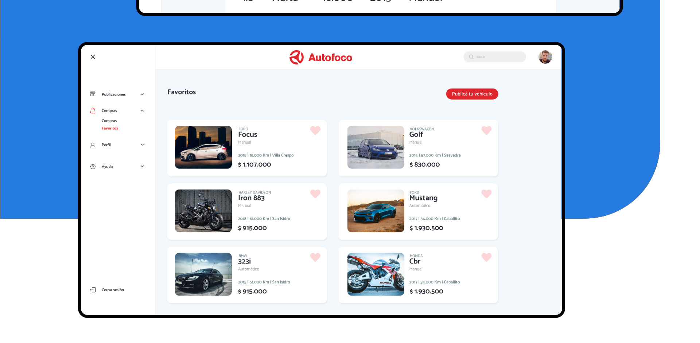

 <html>
  <head>
    <meta charset="utf-8">
    <meta name="viewport" content="width=device-width, initial-scale=1.0,maximum-scale=1.0, minimum-scale=1.0, user-scaleble=no">
    <title>Portfolio Juan Marcos Federico</title>

    <script src="https://kit.fontawesome.com/77fab739b1.js" crossorigin="anonymous"></script>
    <link href="https://fonts.googleapis.com/css2?family=Manrope:wght@300;500;800&display=swap" rel="stylesheet">
    <link rel="stylesheet" href="../css/main.css">
  </head>
</html>


<body>
  <header>
    <div class="menu-bar-pc">
        <a href="../index.html" class="logo">Juan Marcos ___ Federico</a>

        <nav class="menu-principal">
          <a href="../index.html" class="btn-nav" id="presionado">Proyectos</a>
          <a href="../sobremi.html" class="btn-nav">Sobre mí</a>
        </nav>
    </div>


    <div class="menu-mobile">
      <div class="barra">
        <a href="../index.html" class="logo">Juan Marcos ___ Federico</a>

        <a href="" id="btnMenu">
          <i class="fa fa-bars" aria-hidden="true"></i>
        </a>

        <nav class="menu-principal">
          <a href="../index.html" class="btn-nav">Proyectos</a>
          <a href="../sobremi.html" class="btn-nav">Sobre mí</a>
        </nav>

      </div>
    </div>
  </header>


  <section class="main">
    <div class="contenedor">
      <div class="titulo-seccion">
        <h1>Autofoco</h1>
        <p>El proyecto experimental del rediseño del dashboard de Autofoco lo realicé ya que como usuario encuentro varios problemas de usabilidad. El desafío principal fue mejorar la navegación, rediseñar la interfaz y reordenar todo el contenido, utilizando las herramientas del Diseño UX y UI.</p>
      </div>

      <div class="contenedor-del-proyecto">
        
        
        
        
        
        
        
        
        
        
        
        
        
        
        
        
      </div>
    </div>
  </section>


  <footer>
    <div class="contenedor">
      <section class="pie-pagina">
          <p>Portfolio 2020</p>
      </section>
    </div>
  </footer>

  <script src="../js/jquery.min.js"></script>
  <script src="../js/menuMobile.js"></script>
  <script src="../js/prefixfree.min.js"></script>
</body>
